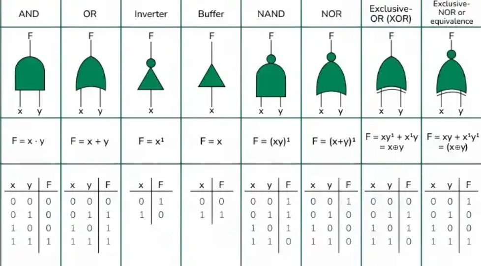
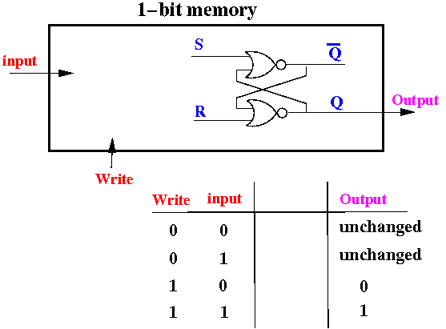

DR. ibrahim Zewail
Call MeLogic Gates are the fundamental building blocks in digital electronics. There are basically seven main types of logic gates that are used to perform various logical operations in digital systems. By combining different logic gates, complex operations are performed, and circuits like flip-flops, counters, and processors are designed. In this article, we will see various types of logic gates in detail.
1. AND GATE: exits "1" only when both entries are "1", and any other case exits "0".
2. OR GATE: The OR gate gives an output = 1 if at least one of the two inputs = 1
3. NAND GATE: The nand gate is an abbreviation for NOT AND, that is, it gives the negation of the result of an AND gate.
4. XOR GATE: (Short for "Exclusive OR") gives output = 1 only when one of the two inputs = 1 and the other = 0 And give a result=0 when the two inputs are equal.
5.XNOR GATE: Short for Exclusive NOR, gives a result of = 1 only when the two inputs are equal and gives a result of =0 when the two inputs are different
1. OneBit memory It is the simplest storage unit in any digital system, storing either 0 or 1. It is usually implemented using a flip-flop or a latch.
2. NMOS: Turns ON when the voltage at the gate is high (logic 1). Turns OFF when the voltage is low. Fast, but consumes power when in the ON state.
3. PMOS: Turns ON when the voltage at the gate is low (logic 0). Turns OFF when the voltage is high. Slightly slower, but important for building CMOS circuits (combination of PMOS + NMOS).
4. Clock: an electronic signal (a square wave) that alternates between 0 and 1 in a regular and stable manner. Its main function is to determine the timing of digital circuits, essentially telling each component in the circuit “when to operate” and “when to change its state.
5. Flip-Flop: A basic component that stores 1 bit of data. It relies on a clock signal to change its state. It has two main types: D flip-flop: Stores the value present on the D input when the clock signal arrives.
USES MEMORY ONE BIT: Building larger storage units such as registers and RAM. Storing on/off states of devices. Storing temporary calculation results in processors. Building counters or simple timers.
Stores the on/off state of devices or components in digital systems.
Forms part of processor registers to hold small amounts of data temporarily.
Used in digital counters to count events or clock pulses.
Holds control or enable signals to coordinate operations between system parts.
Acts as flags to indicate conditions like error states or completion of a task.
Comparison circuits,System control,Arithmetic circuits such as multipliers
Alarm systems,Automatic lighting circuits,Signal aggregation from multiple sources
Error detection circuits,Used in constructing flip-flops in some designs
Comparison circuits,Half adders and full adders,Data encoding
Signal matching,Equality detection in control systems, Error checking circuits
Used in synchronization circuits and counters,Reduces power consumption,Control units